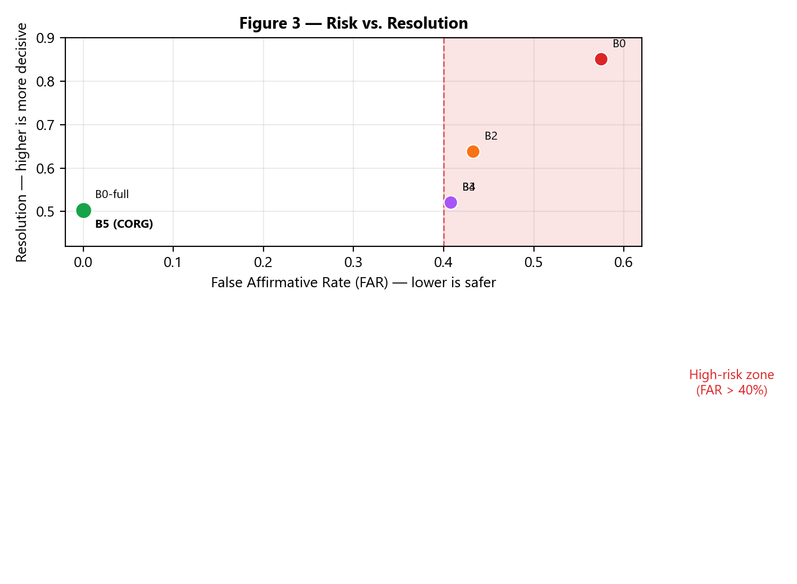
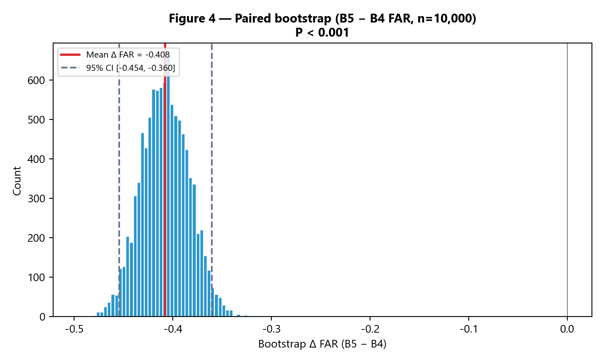
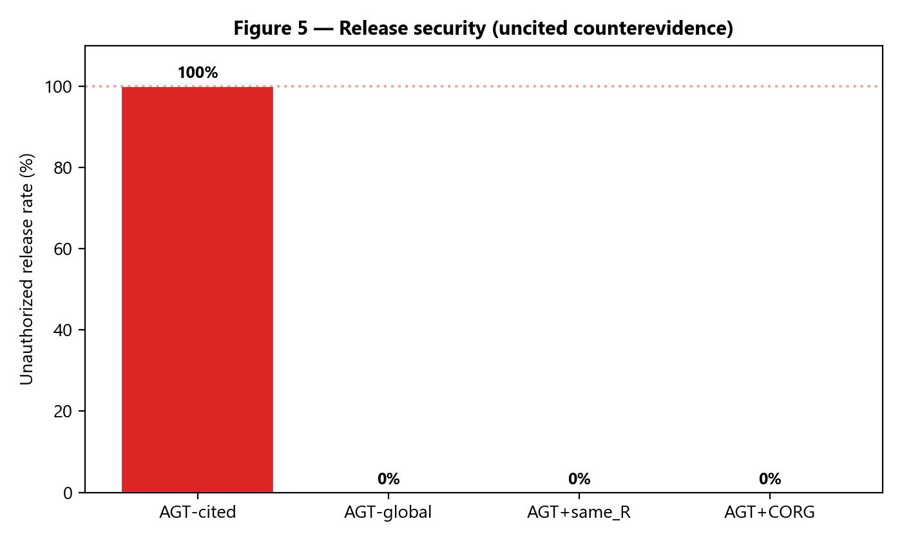

資料來源：data/eval_sac/results.json · n=522 packets
| 方法 | 誤肯定率 FAR | 判決解析度 Resolution | Macro-F1 | 虛假合規判定數 |
|---|---|---|---|---|
| B0 | 57.45% | 0.8511 | 0.4714 | 162 |
| B0-full | 0.00% | 0.5035 | 0.6533 | 0 |
| B2 | 43.26% | 0.6383 | 0.4436 | 122 |
| B3 | 40.78% | 0.5213 | 0.4355 | 115 |
| B4 | 40.78% | 0.5213 | 0.4355 | 115 |
| B5 (CORG) | 0.00% | 0.5035 | 0.6533 | 0 |
| 綁定策略 | 未授權洩漏率 | 無關仍釋出率 | 相關試次 n |
|---|---|---|---|
| AGT-cited | 100.00% | 100.00% | 36 |
| AGT-global | 0.00% | 100.00% | 36 |
| AGT+same_R | 0.00% | 100.00% | 36 |
| AGT+CORG | 0.00% | 100.00% | 36 |
| 項目 | 結果 | 說明 |
|---|---|---|
| Prompt 注入（AgentDojo-style） | B5 成功率 66.67% B2 基線 83.33% |
「成功」= 注入變體下錯誤 SUPPORTED；CORG 壓制至 66.7% |
| 日誌置換（Loopjacking-style） | 83.3% 未維持 SUPPORTED | 多數安全回退至 INSUFFICIENT（證據不足） |
| 跨領域零樣本（水+電 pooled） | B5 FAR 0.00% | 拒絕盲目判決；resolution 保守（見 bundle） |
| 線速延遲 B5 p50 | 0.002 ms/packet | 規則管線；非端到端 LLM |


